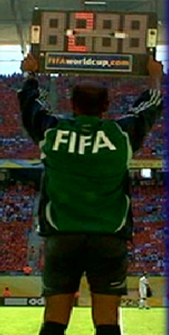

PERTANDINGAN BERLANGSUNG DUA BABAK YANG WAKTUNYA SAMA
PEMAIN BERHAK MENDAPAT WAKTU ISTIRAHAT ANTARA KEDUA BABAK
WAKTU ISTIRAHAT TIDAK LEBIH DARI 15 MENIT (DAPAT DIUBAH ATAS PERSETUJUAN WASIT)
TAMBAHAN WAKTU DAPAT DIBERIKAN SETIAP BABAK UNTUK PENGGANTI WAKTU YANG HILANG PADA BABAK TERSEBUT, AKIBAT ADA :
Penggantian pemain
Penilaian terhadap pemain yang cedera
Pemindahan pemain cedera keluar lapangan permainan untuk mendapat rawatan
Waktu yang dibuang
Sebab-sebab lainnya
TENDANGAN PINALTI
Jika tendangan pinalti harus dilakukan disaat waktu pertandingan telah habis, lamanya pertandingan dari setiap babak harus diperpanjang sampai tendangan pinalti selesai dilaksanakan secara sempurna
Lamanya Pertandingan
Dua babak dengan waktu sama, yaitu 45 menit (tiap babak)
Kecuali ( turnamen ) ada kesepakatan perubahan lama waktu pertandingan oleh wasit dan kedua-dua tim yang bertanding
Kesepakatan untuk merubah lama waktu permainan (jika ada), dibuat sebelum permulaan permainan
PENGHITUNGAN WAKTU UNTUK MASA PERTANDINGAN
BERDASARKAN WAKTU YANG DITENTUKAN SESUAI JAM DIPERGUNAKAN OLEH WASIT
DIMULAI KETIKA BOLA DIMAINKAN, BUKAN KETIKA WASIT MENIUP PLUIT PERTANDA PERMULAAN / MEMULAI PERMAINAN
ISTIRAHAT ANTARA DUA BABAK
Pemain-pemain berhak untuk waktu istirahat
Waktu istirahat (wisthle to wisthle) tidak melebihi 15 menit
Peraturan pertandingan mesti menyatakan waktu istirahat
Waktu istirahat hanya boleh diubah dengan persetujuan wasit
AIR MINUM
Para pemain bisa minta break minum air dalam kondisi cuaca yang sangat panas.
Water break hanya diperbolehkan ketika cuaca sangat panas atau sangat lembab, diluar itu dilarang diberlakukan
TAMBAHAN UNTUK WAKTU YANG HILANG
Tambahan waktu diberikan pada penghujung setiap babak untuk pengganti waktu yang hilang, akibat:
PENGGANTIAN PEMAIN
MENILAI KECEDERAAN PEMAIN
MENGELUARKAN PEMAIN UNTUK RAWATAN
WAKTU YANG DIBUANG
SEBAB-SEBAB LAINNYA
Jumlah tambahan waktu sebagai pengganti waktu yang hilang terpulang pada kebijakan wasit
PERAWATAN PEMAIN YANG CEDERA
Pemain yang cedera boleh mendapat perawatan tim medis dalam lapangan hanya 20 detik dan setelah itu harus keluar menunggu di luar lapangan sampai wasit memperbolehkan pemain melanjutkan bermain
PEMAIN YANG CEDERA AKIBAT PELANGGARAN YANG DILAKUKAN PEMAIN LAWAN DAN OLEH WASIT DIGANJAR KARTU KUNING/MERAH PEMAIN TERSEBUT BOLEH SEGERA MENDAPATKAN PERAWATAN RINGKAS DILAPANGAN DAN TIDAK HARUS DIBAWA KELUAR / MENUNGGU DIPINGGIR LAPANGAN
CEDERA AKIBAT PELANGGARAN YANG DIGANJAR KK / KM AKAN LANGSUNG MENDAPATKAN PENANGANAN TANPA ADA ABA-ABA DARI WASIT DAN PEMAIN YANG CEDERA TIDAK HARUS BERADA DIPINGGIR LAPANGAN UNTUK MENDAPAT PENANGANAN.
MEMBENARKAN PEMAIN YANG CEDERA MENERIMA PERAWATAN RINGKAS DILAPANGAN PERMAINAN DAN MENERUSKAN PERMAINAN TANPA PERLU KELUAR DARI LAPANGAN, KECUALI CEDERA YANG PARAH DAN PERLU DIKELUARKAN
TAMBAHAN WAKTU
PENGGANTI WAKTU YANG HILANG
TAMBAHAN WAKTU DIBUAT, APABILA PENUNDAAN MELEBIHI BATAS KEWAJARAN
OFISIAL KEEMPAT MENUNJUKKAN KEPADA PENONTON MENGENAI TAMBAHAN WAKTU YANG DIPUTUSKAN OLEH WASIT
TAMBAHAN WAKTU BOLEH BERTAMBAH, TETAPI TIDAK BOLEH BERKURANG
WASIT TIDAK DAPAT MENGKONPENSASIKAN KESALAHAN PENGGUNAAN WAKTU BABAK PERTAMA DENGAN MENAMBAH ATAU MENGURANGI WAKTU PADA BABAK KEDUA.

TAMBAHAN WAKTU (EXTRA TIME) :
Peraturan pertandingan boleh menentukan lain dua babak waktu yang sama, untuk tambahan waktu
PERTANDINGAN TERTUNDA/TERHENTI :
Suatu pertandingan yang tertunda/terhenti harus dimainkan/dilanjutkan kembali kecuali ada ketentuan lain yang diatur dalam peraturan pertandingan
3 WAKTU (3W)
WAKTU HILANG
Perlu ditambah akibat adanya penggantian pemain, kecederaan, membuang waktu dsbnya
WAKTU LANJUTAN
Waktu dipanjangkan untuk pelaksanaan tendangan penalti pada hujung babakpermainan
WAKTU TAMBAHAN
Waktu yang dipergunakan berdasarkan peraturan pertandingan untuk menentukan kalah-menang suatu tim sekiranya pertandingan berakhir seri.